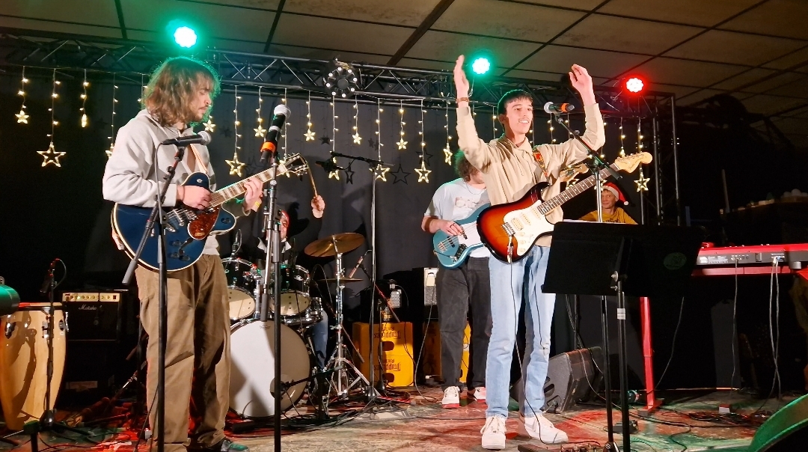
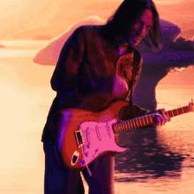
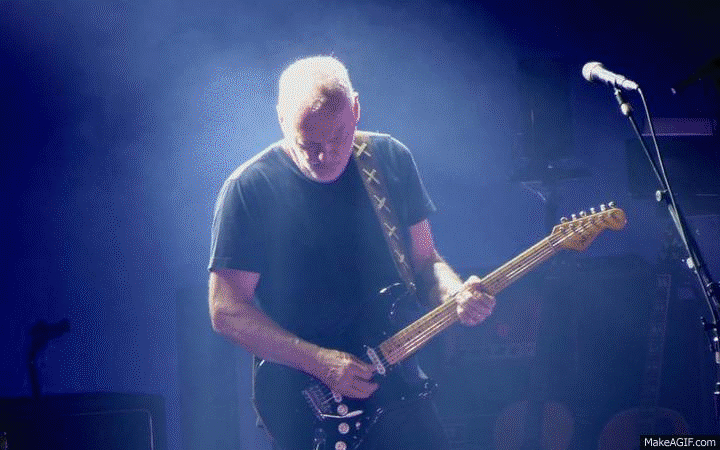
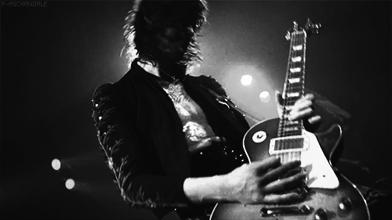
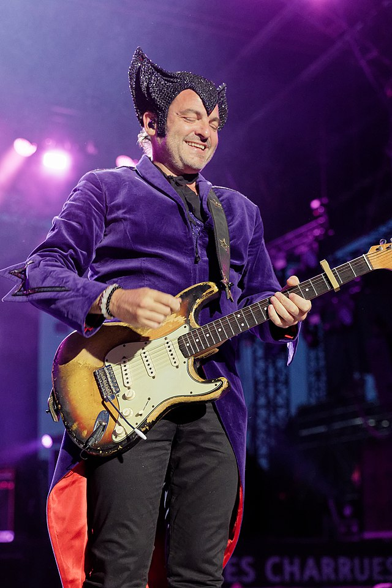
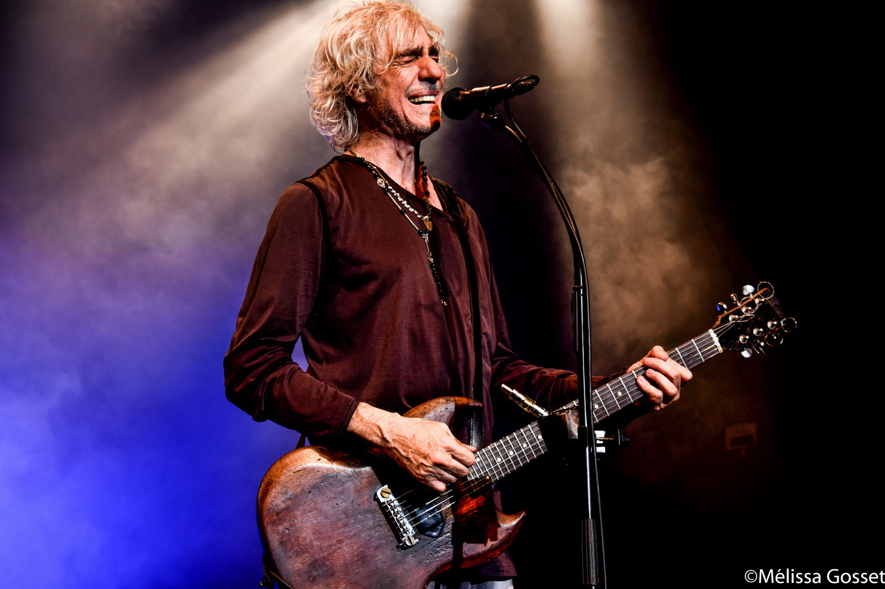
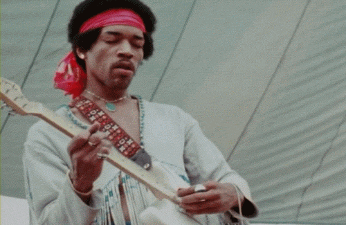

La Scène
C'est ici que tout commence. L'adrénaline, les lumières, le son. Quand je joue, je ne suis plus un étudiant, je suis musicien.

C'est ici que tout commence. L'adrénaline, les lumières, le son. Quand je joue, je ne suis plus un étudiant, je suis musicien.
Les géants sur les épaules desquels je grimpe

Red Hot Chili Peppers. Il m'a appris qu'une note jouée avec le cœur vaut mieux que mille notes jouées vite. Le maître de l'émotion brute.
Pink Floyd. Avec lui, la guitare devient une voix. Ses solos planants et son son atmosphérique sont ma référence absolue pour le "Tone".


Led Zeppelin. L'architecte du Hard Rock. Il mélange la puissance électrique et la finesse acoustique comme personne.
Un timide qui devient une bête de scène. Sa Stratocaster série L de 1962 est légendaire, tout comme sa capacité à emporter le public.


L'âme de Téléphone. Ses improvisations blues-rock sont une école à elles seules. Un jeu instinctif et généreux.
L'inventeur. Il a transformé le bruit en musique. Son utilisation du feedback reste ma plus grande leçon de liberté créative.

D'autodidacte à musicien de groupe

Tout a commencé avec des tutoriels YouTube. J'ai appris la persévérance : répéter un geste mille fois. Aujourd'hui, je joue en groupe, et cette discipline m'aide aussi dans le code.